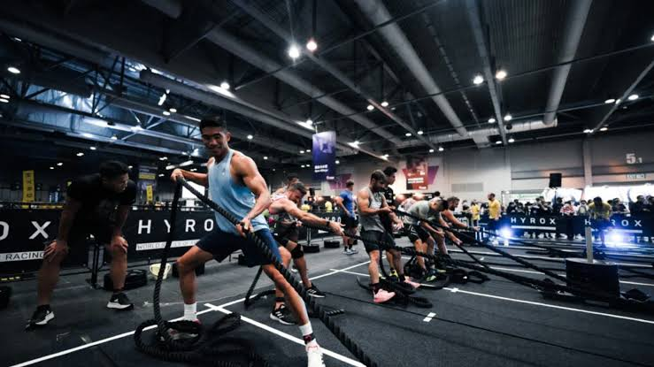

8 runs. 8 stations. One finish line. Train for the world's fastest-growing fitness race at Prior Lake's official HYROX affiliate gym.
The Official Format
CrossFit Prior Lake is a proud official HYROX affiliate gym, offering race-specific training designed to prepare you for the world's fastest-growing fitness race. Combining functional strength stations with compromised running, our HYROX program builds the endurance, strength, and mental toughness you need to crush your next race — right here in Prior Lake, Savage, and Shakopee.
HYROX is a global fitness race that combines 8 x 1km runs with 8 functional workout stations — think sled pushes, sled pulls, burpee broad jumps, rowing, farmers carries, lunges, and wall balls. Our HYROX program trains you specifically for that format, whether you're signing up for your first race or chasing a podium finish.
Every session blends running capacity with the exact functional movements you'll face on race day, so you show up prepared, confident, and ready to compete.
Know The Course
Every HYROX race follows the exact same 8 stations, each preceded by a 1km run. We train on every one of them so nothing on race day catches you off guard.
1000m of full-body pulling power to open the race.
50m of heavy, driving lower-body power.
50m of grip and posterior-chain strength.
80m of explosive, full-body conditioning.
1000m of controlled pacing under fatigue.
200m loaded carry testing grip and core.
100m of loaded lunges to burn out the legs.
75-100 reps to leave everything on the floor.
Race Day Energy
A look at what HYROX racers experience on the floor — the grind, the grit, and the crowd that makes it unforgettable.
Wall Balls — Leave It All On The Floor
Every Rep Counts
Sled Push Line

Train Like A Racer
Inside A Session
Every HYROX session at CrossFit Prior Lake follows the same structure that mirrors race day, so your body and mind know exactly what to expect when it counts.
Each session opens with a dynamic warm-up targeting the running mechanics and functional movement patterns you'll need for that day's stations.
Train the exact HYROX format — running intervals paired directly with sled pushes, sled pulls, rowing, farmers carries, lunges, and wall balls under fatigue.
Periodically test your pacing and strategy with full or partial race simulations, so you walk into race day with a proven plan and the confidence to execute it.
Why Train Here
As an official HYROX affiliate gym, CrossFit Prior Lake delivers race-specific programming and coaching you won't find at a typical gym — built by coaches who understand exactly what HYROX demands.
Official
HYROX Affiliate Gym
Train with programming designed to the official HYROX standard — the same running distances, station order, and movement standards you'll face on race day.
Full Access To
Race-Specific Equipment
Sleds, ski ergs, rowers, wall balls, and more — practice on the actual equipment you'll use at your race, not improvised substitutes.
Surrounded By
A Community Of Racers
Train alongside other members chasing their own HYROX goals — swap race-day tips, push each other in training, and celebrate finish lines together.
Real People, Real Results
With over 100 five-star Google reviews, CrossFit Prior Lake is the highest-rated CrossFit gym and fitness center in the Prior Lake, Savage, and Shakopee area. Our members consistently praise the welcoming atmosphere, expert coaching, and life-changing results. Don't just take our word for it — read what real people have to say about training with us.
No credit card required
Got Questions?
Everything you need to know about training for HYROX at CrossFit Prior Lake.
HYROX is a global fitness racing series that combines 8 x 1km runs alternated with 8 functional workout stations, including sled pushes, sled pulls, burpee broad jumps, rowing, farmers carries, sandbag lunges, and wall balls. It's the same format for every racer worldwide, at every event.
Not at all. Our HYROX program welcomes complete beginners. Your coach scales every station and running interval to your current fitness level, whether you're training for your first race or chasing a competitive time.
HYROX training is built specifically around the official race format — compromised running paired directly with the exact 8 stations you'll face on race day. Regular CrossFit classes are broader, covering Olympic lifting, gymnastics, and varied conditioning. Many members do both to build a well-rounded base.
You'll train on the same style of equipment used at official HYROX events — sleds, ski ergs, rowers, wall balls, sandbags, and kettlebells — all available at our Prior Lake facility.
Races are registered directly through HYROX. As an official affiliate gym, our coaches can help guide your training timeline around your race date and answer any questions about what to expect on race day.